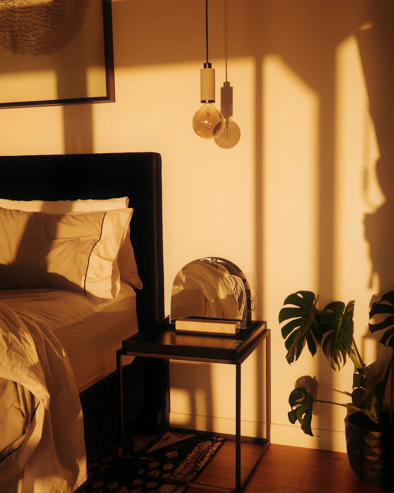

Saúde mental e desenvolvimento humano
Um espaço de cuidado para você e sua família.
Escuta acolhedora e acompanhamento profissional nos diferentes momentos da vida.

Especialidades
Encontre o cuidado que você procura
O contato pelo WhatsApp inicia uma solicitação de agendamento. O horário é confirmado pela clínica.
Equipe
Quem cuida de você

A clínica
Escuta, acolhimento e cuidado profissional
Acreditamos que cuidar da saúde mental começa por um espaço onde cada pessoa se sinta ouvida, sem pressa e sem julgamentos.
A clínica nasce com a psicologia e com o desejo de, ao longo do tempo, reunir diferentes especialidades em torno do mesmo propósito: acompanhar pessoas e famílias com respeito, ética e atenção à história de cada um.
Cuidado em diferentes fases
Cada momento da vida pede uma escuta própria
-
Vida adulta
Para quem deseja olhar para si, para suas relações e para as mudanças do caminho.
-
Famílias e responsáveis
Para pais e cuidadores que buscam orientação e apoio no dia a dia familiar.
-
Infância e adolescência
Para os primeiros anos e as descobertas que vêm com eles.
Os atendimentos disponíveis para cada fase são informados no contato com a clínica.
Como agendar
Três passos simples
Escolha a especialidade desejada.
Entre em contato pelo WhatsApp.
Converse com a equipe para verificar disponibilidade e orientações.
Perguntas frequentes
Antes de entrar em contato
Como faço para agendar?
Escolha a especialidade e clique no botão de agendamento. Você será levado ao WhatsApp com uma mensagem pronta, que pode editar antes de enviar.
O horário já fica confirmado ao enviar a mensagem?
Não. A mensagem inicia uma solicitação de agendamento. A clínica responde verificando a disponibilidade e confirma o horário com você.
Valores, convênios e atendimento online?
Essas informações são passadas pela clínica na conversa inicial, de acordo com cada especialidade.
Posso contar minha situação pelo WhatsApp antes do atendimento?
Recomendamos não enviar detalhes de saúde por mensagem. Use a conversa para tratar de horários e orientações; o restante fica para o atendimento, com sigilo profissional.
E se eu precisar de ajuda com urgência?
Este site não é um serviço de emergência. Em risco imediato, ligue 192 (SAMU) ou procure o pronto-socorro mais próximo. O CVV atende 24 horas, gratuitamente, pelo 188.
Contato
Vamos conversar
Envie uma mensagem para tirar dúvidas ou solicitar um horário.
Endereço, horários e redes sociais serão publicados em breve.